自2025年11月Claude Code拐点以来，长上下文多轮agentic工作负载快速增长，现在主导生产推理流量。2026年4月OpenAI的Enterprise agentic支出超过ChatGPT支出。
Agentic工作流已决定性接过接力棒。今天，我们发布AgentX 1.0：世界上第一个Apache 2.0的全开源、百万上下文的轮式agentic编码推理基准。完整dashboard在inferencex.semianalysis.com。
过去大多数测量基于固定序列长度prefill/decode负载，这是不准确的测量方式。现实是多轮、长上下文、高prefill复用、subagent突发、KV cache offload、大量tool calls。我们旨在构建行业测量AI硬件和软件性能的正确方式。
我们花了超过 $3M构建这个数据集，今天全部开源。
高层看，agentic工作负载由四要素刻画：
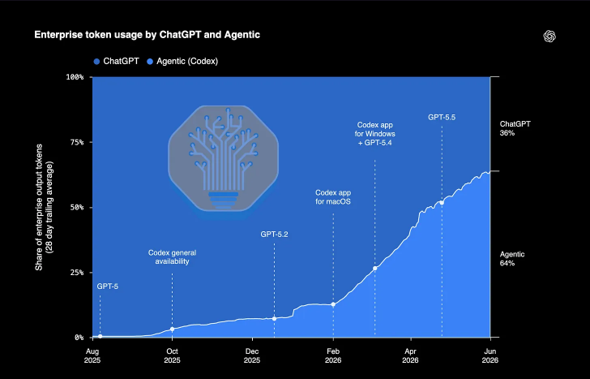
1. 多轮：一个会话含大量（几十到几百次）用户/助手交互，对比聊天场景的少数几次。2. 长上下文：system prompts、tool definitions、大量轮次让上下文快速累积。3. 高前缀复用：对话线性推进（第n-1轮输出拼到第n轮），大部分上下文可从KV cache服务而非重算（取决于存KV tensor的存储量）。n增长时缓存输入对未缓存的比率趋向1。4. Sub-agent突发：会话启动多个短命subagent、带新鲜上下文，制造突发KV cache模式。
考虑到这些特征，基准这些工作负载与现有固定序列长度基准根本不同。Agentic推理本质是 *系统问题*。因极高前缀复用，KV tensor必须跨节点/rank高效传输（NIXL、MoRI-IO、Mooncake）。不同对话应路由到不同节点/rank，取决于合适前缀驻留何处以最大化cache hit rate（llm-d、Dynamo、vLLM/SGLang router）。长上下文对话压HBM容量装KV cache，需把KV tensor offload到不同内存层级（DRAM、SSD），该过程要高效执行（Mooncake Store、LMCache、vLLM Simple Offloading、SGLang HiCache）。
这对比固定序列长度单轮负载：前缀复用不相关，推理性能大致反映baseline chip/kernel性能。这不是说InferenceX上大量固定序列数据不重要：剥离agentic serving复杂性清楚显示低层推理性能优化如何推进，也为AgentX结果提供重要baseline。
为使AgentX负载尽可能现实，我们收集393个内部SemiAnalysis匿名Claude Code轨迹初始语料重放。用类似Qwen-Bailian数据集的方法匿名化内容同时保留原前缀复用模式。用AIPerf按原请求调度在变化并发级别重建轨迹。我们与Anthropic合作发两个Claude Code特性让AgentX数据集成为可能。
看推理编码性能时，OpenAI、Anthropic、xAI等前沿实验室关注三件事：每美元性能vs交互性（TPOT）、TTFT（首token时间）、端到端任务完成。每兆瓦性能也重要：地面数据中心电力是关键约束。
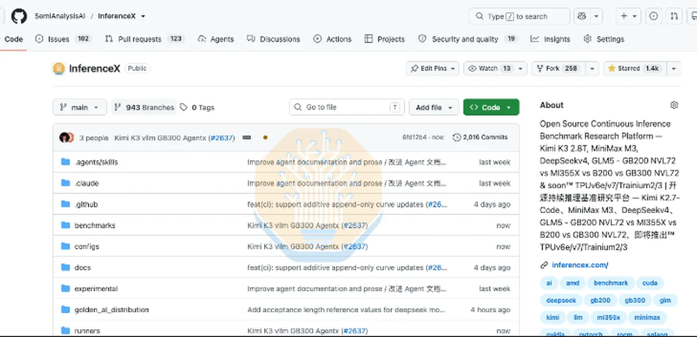
一般既看每用户每秒token（TPS，aka交互性）也看TTFT，因为两者常互为代价。例如一些SKU在不错交互性下达成很高吞吐，但TTFT严重劣化。「可接受」的p90 TTFT因应用而异。多数服务agentic负载的生产系统p90 TTFT在200-5,000ms。超5-10s就推离「在线推理」边界。超高吞吐曲线段仍有实用应用（batch处理、*非常长*运行agent），那里延迟无所谓、峰值系统利用可取。
单节点看，MI355X开源性能（vLLM）落后厂商特定ATOM（AMD版TensorRT-LLM）。AMD用ATOM快速推前沿很好，但我们鼓励他们把改进更高优先级upstream进vLLM。
AMD分布式推理（DI）团队过去半年在8k1k场景进步大，但离现实负载可用仍有路。吞吐每GPU vs交互性看，1×DEP8+1×DEP8 disagg配置只在高峰吞吐场景实现微小增益，低延迟场景反而更差。更糟的是中高交互性配置的吞吐增益被p90 TTFT显著尖峰盖过：部分因SGLang的 --enable-prefill-delayer参数（并发超64后推迟prefill准入让DP rank组更满batch，最多30个前向），且这些点把chunked prefill大小从8,192增到65,536。
e2e延迟上ATOM MI355X超B200 vLLM（但不超B300或B200 SGLang）。问题是最多中国/西方AI实验室不想生产用ATOM（除阿里一个小广告业务单元），缺大量特性。阿里主Qwen LLM org生产不用ATOM。
2026-08-21前，AMD MI355X的强SGLang团队在e2e perf/$ 匹配B200 vLLM。但B300 vLLM和B200 SGLang仍超MI355X。8/21后因Inferact和NVIDIA的vLLM优化，B200的perf/$ 超MI355X。这是接近的竞赛，未来几周优化值得期待。
DeepSeek V4 Pro 0813是来自中国的超流行前沿开源权重模型，约1.6万亿参数、490亿活跃参数。
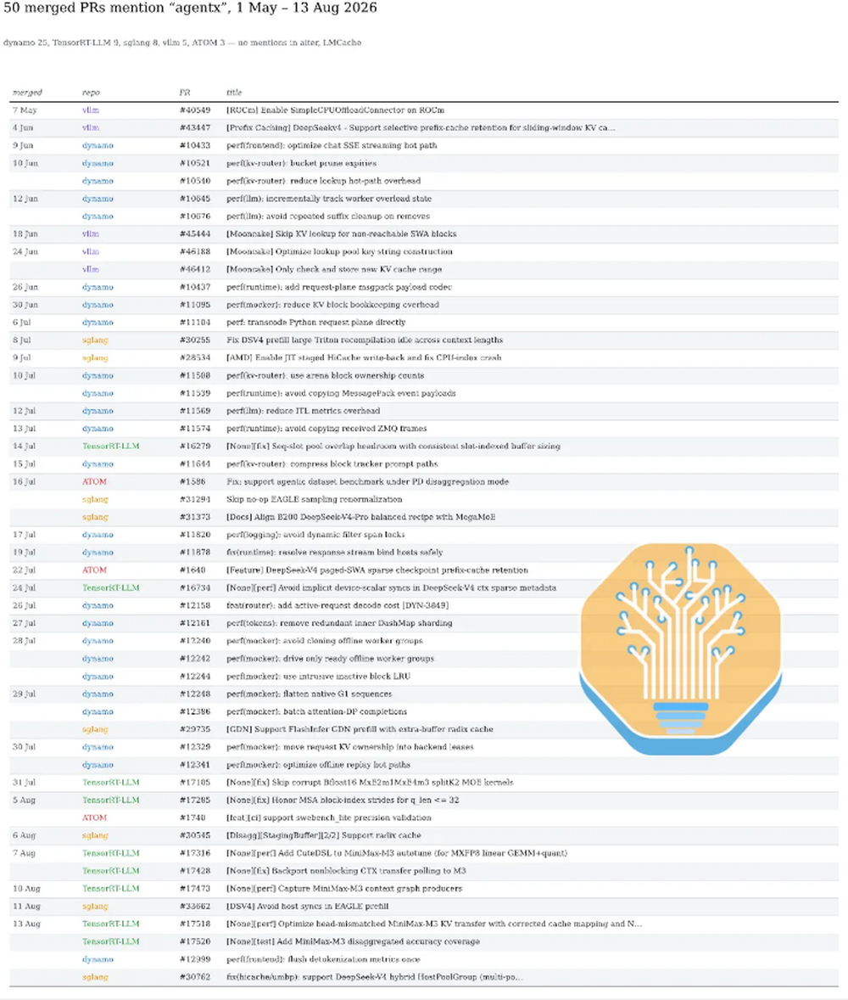
截至8月21日，下图显示所有提交按每SKU的最佳性能，按总拥有成本（TCO）归一化。
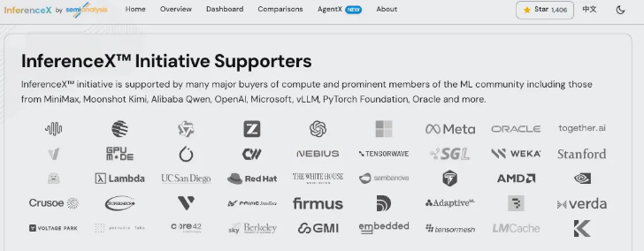
所有DeepSeek v4运行中所有请求的ISL/OSL分布：ISL p50=88k、p90=272k、p95=404k、p99=675k；OSL p50=413、p90=2.2k、p95=3.7k、p99=8.6k。
NVIDIA侧最有竞争力的是GB300 Dynamo TRTLLM和GB200 Dynamo vLLM。两配置都靠PD disagg在合理交互性达成高吞吐。GB300配置还用wide-EP（DEP32）decode实例在曲线中部达更高吞吐。
2×DEP8+1×DEP12 GB200点相对3×DEP8+1×DEP16 GB300点在TPS上比TTFT更接近。TTFT一般对工作负载「尖峰性」更敏感：GB300点达成更高总并发、更多subagent流量、更多冷prefill。
按TCO归一化，B300 vLLM vs B200 vLLM聚合性能相当接近。主要区别是B300因HBM容量比B200多50% 可「挤」出额外吞吐。
384并发agentic轨迹负载下，B300 vLLM DEP8 w/ 3TB DRAM（vLLM simple offloading）达91% HBM cache hit rate + 1.36% DRAM cache hit rate。因为该配置HBM KV cache工作集约43M token，负载几乎不超这数。
B200并发196（其余参数相同）只见73% HBM cache hit rate、更依赖DRAM（offload cache hit rate近20%）。其HBM KV cache工作集22M token，约B300一半。
DRAM KV offloading通常实现为write-through cache（每前缀写HBM cache也写DRAM cache），所以DRAM可用量显著大于HBM KV cache容量（1.5-3倍）时最有效。
H200 SGLang FP8低并发能服务DeepSeek v4，perf/$ 上甚至与B200/MI355X SGLang竞争。但高吞吐场景因缺HBM无法与新SKU竞争，高并发依赖DRAM KV offloading会导致用户增长时延迟不合理。
总体MI355X相对主要对手B200/B300表现尚可。曲线低吞吐/低延迟段（只用tensor parallelism和更初级kernel）性能最可比。AMD需优化MI355X的DEP kernels才能在高吞吐场景更有竞争力，尤其考虑其HBM比B200多1.5×。
Kimi K3是另一中国前沿开源权重模型，2.8万亿总参数，与Claude的Mythos/Fable5架构同级参数（作开源权重代理）。Kimi K3大到单台B200 server都装不下，须用wide EP/wide TP或pipeline parallelism装全部权重。
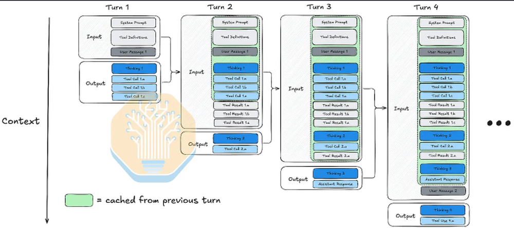
vLLM上speculation decoding/DSpark直到最近才与pipeline parallelism组合，所以B200在Kimi K3上性能惨、被MI355X压制（B200无法对pipeline parallelism用spec decode）。
MI355X vLLM短上下文单轮负载day-0开箱即用，但长上下文多轮负载第一周MI355X AITER和Triton kernels剧烈panic，upstream vLLM在现实负载对MI355X完全不可用。
Hopper难服务AgentX Kimi K3负载：Kimi巨型模型、vLLM maintainers/NVIDIA没聚焦优化Hopper for K3。Hopper（SM90）需为K3定制tuned kernels加TP32/EP32 tuned shapes才能高交互性服务。
AMD快速推K3性能很好（ATOM），但鼓励进一步优先upstream到vLLM：ATOM是AMD最强引擎，但vLLM仍是客户用upstream开源serving栈的更相关对比。
曲线40-60秒e2e延迟段，MI355X ATOM在perf/$ 上甚至超GB300 NVL72 vLLM。
MiniMax M3 432B：NVIDIA完胜所有对手。AMD软件在MiniMax上表现糟糕，尤其在长上下文：因AMD工程领导激励只调短上下文单轮负载、忽视长上下文多轮。
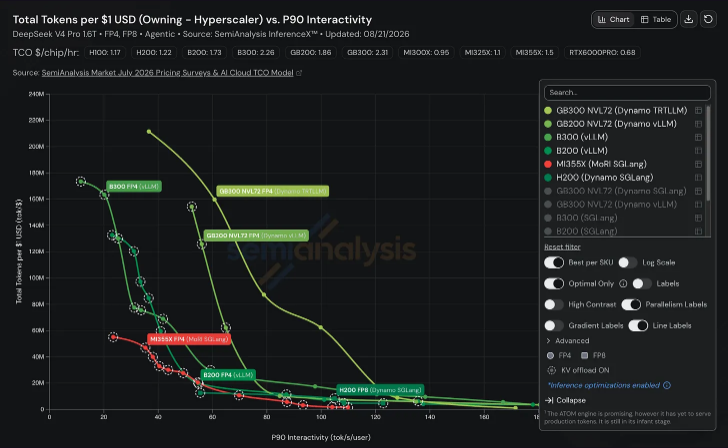
B300 TRT-LLM TP2拿下M3皇冠。缺DP-attention点（M3上非最优，KV cache locality成routing约束）。GB200并发40时TP4/EP4/DPA只达普通TP4的0.60× 吞吐、p90 TTFT 3×+。并发32时cache命中28.8% vs 96.0% 理论：每DP rank私有pool的1/4，300k-token会话重落到错误rank全重算。
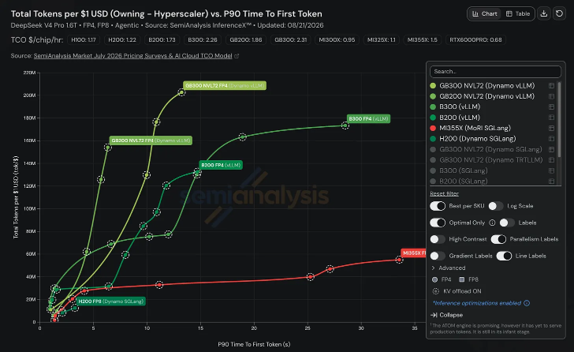
B200/B300在TCO归一化吞吐上完全超rack-scale对应物。AgentX上rack-scale优势不明显：Dynamo router可能成瓶颈（其工作量随活跃前缀数量和长度缩放）。无well-tuned的wideEP/wide DCP/wide TP kernels；GB200/300 TCO更高、无wide ep/wide DCP就以更差perf per TCO显现。
无提交跑context parallelism，尽管p90 ISL 317k。4 KV heads下DCP即使TP8也封顶2，MSA indexer需自己的context-parallel处理。
NVIDIA全部Pareto最优点在并发20以上都用KV offload；AMD无Pareto点用DRAM KV offload、其他模型也少用。原因是AMD vLLM的GPU-to-CPU传输极低效：hipMemcpyBatchAsync API到ROCm 7.14才存在，没有它vLLM原生Simple CPUOffloading需串行Memcpy而非批量更大消息。
vLLM吞吐vs p90交互性上与TRT-LLM很接近；吞吐vs p90 TTFT上vLLM更好。
Qwen3.5 397B：用GatedDeltaNet（每几层替代普通attention）。GatedDeltaNet由MIT/NVIDIA Research发明，理论上恒定状态存储vs普通attention的线性存储。
模型原生最大上下文262k，我们用截断数据集（模拟用户在更小模型频繁到达max context的场景）。
Qwen3.5 397B是NVIDIA在SGLang-vs-SGLang的强势堡垒，90 tok/s/user时性能好20×+。AMD对Qwen3.5 SGLang零竞争。NVIDIA过度优化交互性牺牲TTFT（TRT-LLM最明显）：所有NVIDIA SGLang提交的p90 TTFT都远低于TRT-LLM。
相对H100，Qwen3.5上B300 FP4每美元性能好12×。
GLM 5.3在GLM5.2 744B基础上加post training，是前沿级模型。
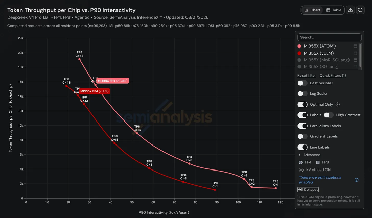
OSS SGLang性能上，这又是NVIDIA在现实agentic推理超AMD的模型。150 tok/s/user p90交互性时NVIDIA成本效率好到5×。以AMD当前软件状态，即使对手芯片硬件白送（但提供商仍付数据中心托管、电力、运营成本），NVIDIA的per-token成本仍更便宜。
ATOM上AMD perf/$ 比GB300 NVL72 SGLang甚至部分范围的TRTLLM更好。AMD团队干得好；期待把优化移植到SGLang。
我们引入实验指标E2E Normalized Interactivity：评估用户考虑TTFT和TPS时体验到的响应速度。定义为OSL/E2EL。代入E2EL = TTFT + OSL×TPOT（实际只decode OSL-1个token），得：这实际是交互性（1/TPOT部分）加一个与TTFT成比例的额外惩罚。
该指标实验性、不完美：重度惩罚高TTFT、不捕捉PD分离等优化的所有细微处。所有AgentX v1.0提交分别优化常规交互性和TTFT。我们会继续开发反映现代agentic推理所有细微处的新north star指标。
AgentX首月最有价值的产出不是初始结果，而是基准已经在产生的行业影响：70+ 上游PR：AgentX伙伴用其作north star优化现实生产agentic负载（vLLM、SGLang、TensorRT-LLM、ATOM、AITER、Dynamo、LMCache、Mooncake）。多数优化可迁移到生产流量。
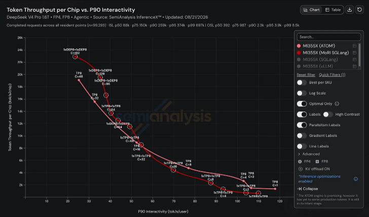
AgentX的真实agentic流量不只基准原始prefill/decode kernels，还测完整端到端token生成过程：KV cache生命周期、hybrid-attention cache正确性、CPU KV offload、transfer progress、routing affinity、incremental tokenization、request serialization、scheduler bookkeeping。
这也是我们持续使命的延续：帮生态加速改善、在软件上带来光速改进。典型例子是与AMD软件开发团队的多年合作，持续反馈输入帮其现代化软件开发原则。
分布式推理生态简介。Agentic推理本质是系统级问题。大规模*分布式系统*处理数十万agentic请求时，请求调度和KV cache管理变得非平凡且有真实性能影响。例如sub-agents给突发KV cache模式，优化不当会错误逐出主agent的cache。
栈顶层是routers（frontends）把请求路由到不同worker。跑data parallel attention时每DP rank有独立KV cache；为不击穿任一cache，请求按不同策略路由（如consistent hash，同会话/subagent请求按唯一ID路由）。
请求路由后由推理引擎（vLLM、SGLang等）的scheduler处理。每引擎有接口连引擎内部KV cache到外部KV cache managers：「pluggable」生态，不同KV cache managers集成多种引擎。
简单部署（当前AgentX结果用）在vLLM同节点跑Mooncake：每vLLM worker嵌Mooncake Store client、把部分host DRAM贡献给外部KV-cache pool。Mooncake Store管理外部cache（placement/eviction），Mooncake Transfer Engine实际移动GPU-CPU内存间数据。
生态由多独立组件组成：推理引擎、routers、KV-cache managers、数据传输库、cluster controllers。NVIDIA Dynamo、llm-d、AMD Infera等平台把所选组件「打包」成完整软件分发，通常是一组协调容器而非单体服务。
长上下文让固定8k prompt无法强锻炼的并行技术受益：8k时几乎无可分、TTFT已短。TP和DP attention在长上下文非最优：TP会让全KV复制到每rank；DP attention虽共享KV，但长上下文工作负载的上下文长度方差更高，可能卡住。
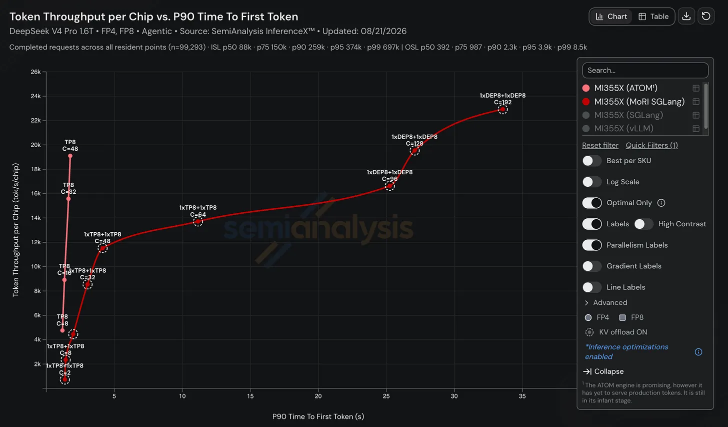
Context parallelism把query tokens跨GPU拆分，两种形式：PCP（prefill context parallelism）和DCP（decode context parallelism）。PCP每rank prefill自己的query chunk（KV ring-passed）：prefill倾向compute-bound，并行化FLOPs让prefill更快、无单rank巨prompt prefill尖峰。DCP每rank扫自己的KV shard，部分attention以flash-decode风格合并：decode memory-BW-bound，并行KV读可更快tok/s。
该并行技术部分由NVIDIA Research发明。DCP/PCP构成CUDA护城河的一部分：AMD的DCP/PCP实现尚未优化。vLLM支持矩阵里每个AMD backend都不支持。
接下来的几节变更聚焦DCP/PCP。
与Inferact、Red Hat、NVIDIA、AMD的vLLM maintainers合作，用AgentX现实replayer作north star，修复大多upstream落地且高度可迁移到生产。几个例子：
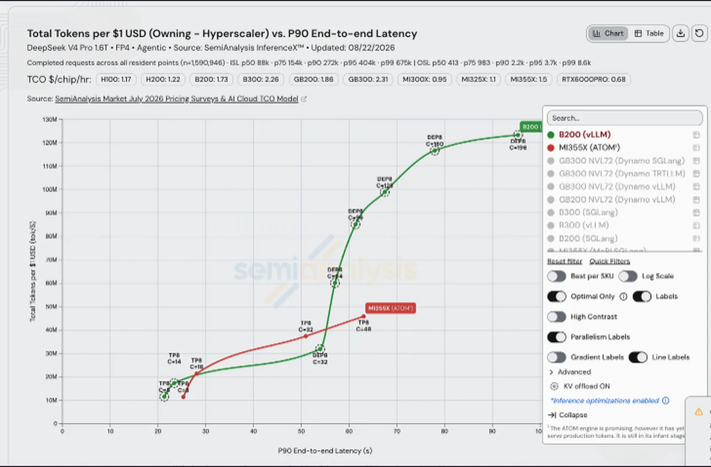
vLLM改进hybrid-attention prefix caching，短命sliding-window分配不逐出有用长上下文checkpoint。Selective retention保留稀疏replay边界，14并发请求、百万token上下文时前缀cache hit rate超95%。同一reachability策略应用到Mooncake，移除unreachable sliding-window lookups。
高并发agents需offloading。AgentX影响下已有vLLM工作流让hybrid模型而非仅uniform full-attention模型支持CPU KV offload。区别重要：uniform模型每token一个KV layout，connector用单block geometry描述；hybrid模型同时带多个cache group、形状和lifetime各异。SimpleCPU connector先来，ROCm启用，再扩展到DeepSeek-V4 hybrid attention：报告输出吞吐高81.7%、mean e2e延迟低46.6%（对比前缀不再装HBM时重算）。
Mooncake也获等效hybrid-memory allocation支持。同一layout问题在分离serving重现：pending change把Kimi-K3的conv+ssm recurrent state随attention KV经MoRI-IO传输（1P1D prefill/decode split）；没有它decode侧从未初始化recurrent state开始。
profiling现实负载时vLLM maintainers注意offload期间成本移到store path（写太多太频繁）。三个新修复：store在相同传输已在途时跳过（并发会话共享前缀只付一次）；store只覆盖新生成KV范围（扩展历史的会话写delta而非每轮重写全前缀）；store不再依赖相同block是否仍在HBM（已调度工作不被底层逐出丢弃）。
load path单独调：lookup每次调度决策都发生而非仅数据实际移动时。scheduler路径异步化lookup（step不阻塞CPU侧cache查询）；compact zero-copy lookup keys、parallel receive-side loading、prebuilt Mooncake key strings移除剩余CPU/传输开销。
长命hybrid state也迫使fixed-shape请求极少触达的正确性/记账修复：vLLM每hybrid cache group发cache events、distributed-context stores正确stride、distributed context/prefill下正确算lookup prefixes、context-parallel accounting对齐cache ownership与sharded token ranges。Speculative state跨merged Mooncake groups和SimpleCPU coordinator传播，防重复轮cache静默丢EAGLE state。
ROCm侧优化继续在cache层之下：剩余成本是per-layer而非per-request。前缀存活并按时到达后，剩decode步本身，session每轮跑数千次、每次可避免的copy和错配kernel都付代价。三个开放变更攻击该层：Kimi-K3把KDA decode结果直接写层输出buffer（移除每KDA层一个device copy）；选AITER sparse-MLA decode kernel替代generic path（报告AgentX输出吞吐高5.22%、inter-token延迟显著降）；full-graph attention projections走tuned AITER GEMMs（固定序列低并发2.3% 增益：显示kernel级变更在uniform shapes干净增益、被agentic trace的cache/scheduling方差淹没）。pending change把形状敏感本身做成dispatch判据：gfx950上DeepSeek V4 C4A selector用hybrid AITER/native path，短中上下文走AITER、长上下文走graph-safe tuned native fallback，报告端到端selector加速1.21-1.76×、decode-kernel geomean 1.2-2.9×（84-shape matrix）。
AgentX团队与RadixArk、Meta、NVIDIA、AMD的SGLang maintainers紧密合作驱动agentic优化。
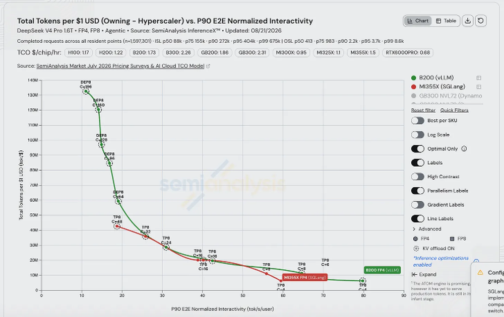
从allocator侧，SGLang的sliding-window工作处理vLLM retention政策解决的同一冲突：window pages和prefix pages来自同一pool，window是更贪婪消费者：不断翻转而prefix静止，压力下瞬态分配挤掉持久分配。
三个设计改进从不同角度进攻：主动在pages离开window时释放（死window state不再抢它用不到的pages）；caps compute locks到单window（bound在途请求一次钉住多少pool）；移除过期full-KV entries。
主动释放有fork形盲点：从共享前缀分支的请求仍持有可复用full-KV，而分支点window state已释放，整个前缀为缺便宜一半而重算。开放工作保留分支点SWA state，让fork继承window而非重建。
ROCm ring-cache fix是正确性而非容量变更：ring buffer按构造复用slot，复用仍被引用的旧内容产生错误输出。这些在单8k prompt全不可见；多轮hybrid session上它们决定昂贵full-attention历史下轮是否还在。
HiCache是SGLang的一等公民in-tree offloading机制。它用不对称解决hybrid问题：offload full-attention cache、返回时重建短sliding-window tail：只有昂贵一半值得跨bus移动，便宜一半重建比取回快。AMD上staged write-back让移动不阻塞引擎。Recurrent state是剩余缺口（无法像window tail从邻近token重建）；FlashInfer GDN checkpoints让它参与前缀复用，吞吐47,771→53,004 tok/s/GPU、92.4% cache hit rate。
两个进一步变更处理变长流量对kernel pipeline的影响。AgentX现实session趋向连续变化上下文长度到达。naive按长度特化runtime会对几乎每个请求编译新kernel。SGLang把上下文长度作为runtime scalar而非收进单次编译：AgentX并发384输出吞吐 +26.75%、mean TTFT -36.25%，靠移除编译而非算得更快。同样精神，移除per-step device-to-host sequence-length同步，消除只因host想要device已有长度而存在的decode bubble。
变长也咬attention kernel内部。GB300上mixed-context decode batch付tail tax：匹配profile把9.8ms decode-step delta的8.4ms归因attention，最长请求拖长persistent kernel共享wave。开放工作把TRTLLM MHA decode batches拆成KV-length-sorted groups，短请求不再等最长。
Decode也可能在上一级饥饿：scheduler而非kernel。DP attention下每rank加入同一MoE collective、本地调度attention工作，被chunked-prefill continuation流喂的rank一直赢prefill-first决策，peer ranks运行batch空等。可配置decode interval在prefill后强制decode rounds：AgentX DSv4 Pro上输出吞吐 +141%、p99 inter-token延迟 -97.3%，代价median TTFT 36.5→59s：用首token等待换流平滑。
请求无可复用历史（如subagent开始）时任何worker都行、只问负载均衡。请求带MB缓存前缀时发到不持该前缀的空闲worker是贵选择，router需知道state住在哪。SGLang加DP cache affinity（session粘到持其cache的rank）、DP-aware prefill/decode routing（分离部署两半一致决策）、cache balance作routing signal（affinity不退化成一个hot worker）。Router只能按被告知行动，所以hybrid cache events也变radix-cache aware和sliding-window aware。
Speculative decoding获特别关注，因为MTP加第二块per-request小state、必须随主cache存活一切。SGLang修分离serving的draft-window transfer、加高并发在线解码overlap scheduling、移除no-op EAGLE renormalization、避免EAGLE prefill期间host synchronization。开放resource-lease scheduling和data-parallel graph-metadata fix继续同一努力：让overlap在请求可撤回/恢复而非简单跑完时也安全。
Heterogeneous prefill/decode拓扑的agentic负载需prefix-aware staging：prefix caching和分离在此糟糕交互。两侧shard不一致时KV不能作一个连续流拷贝，须在transfer grid上拆分、在decode侧期望的offset重组。Prefix hit让它更难：prefill worker只发未缓存余量、decode侧仍期望完整正确定位cache。Radix-cache staging buffer支持按grid拆分缓存发送、scatter到正确decode offsets。
这修正正确性问题：127,500-token共享前缀测试从128针中2对到128/128（cache之前静默落错位置，吞吐基准会把它记为快而自信但错的答案）。AgentX对比还提升median per-user输出吞吐9.6%。传输本身也带死重：decode-side PREBUILT batches从不进模型前向，但每个传输prompt仍展平拷进CUDA input tensor。丢弃那无用prompt传输是最大单一胜利：AgentX GB300上per-user输出吞吐 +18.0%、decode吞吐每GPU +12.7%。跟进把prefill DP-rank bootstrap query移出decode scheduler关键路径，再 +1.36% per-user输出吞吐。
TRTLLM的前端优化针对重复聊天轮次，一个只因多轮负载存在的成本。每轮对话重发整个历史加一点，naive实现全量重tokenize。每KB tokenize便宜，但同一100,000 token每轮重tokenize就灾难。
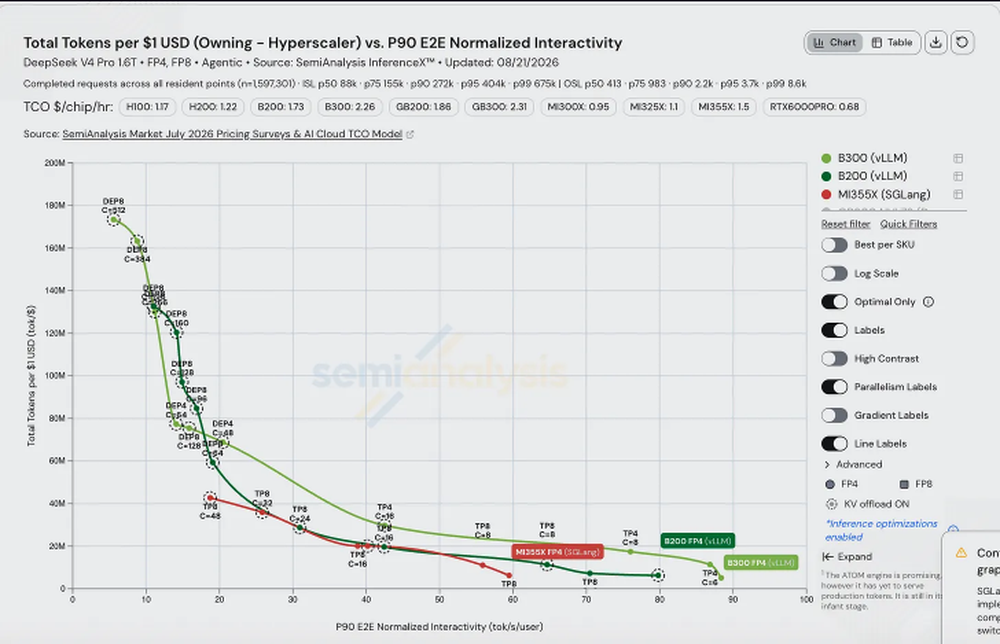
明显修法（只tokenize新后缀）以易漏方式错误：byte-pair encoding非位置无关。token可跨join合并，边界处拆分文本再拼接两token序列可产生不同于整体tokenize的序列，悄悄偏离prefix cache建起的序列。
TRTLLM实现Boundary-aware incremental tokenization：找rendered-text公共前缀、回滚一个完整token（跨join的任何合并重算）、只从那tokenize变更后缀。Qwen3.5 AgentX trace上匹配全部1,087次transition的全量tokenization（正确性经测而非假设），mean处理时间185.1ms→11.3ms。固定8k1k请求无前渲染轮可复用，这些都不出现。chat-template rendering移入input-processing pool，长template不再串行化主请求循环。
MiniMax-M3工作聚焦分离KV移动，失败是粒度问题。prefill/decode头布局不一致时，一逻辑请求的KV从少数大连续区变成数千小strided片，每片变自己的transfer descriptor。移动字节不变；per-descriptor开销爆炸，恰在重要长prompt上以最坏方式爆。Corrected multi-pool mapping + chunked NIXL bounce path用有界可复用arena合并这些片：额外staging copy换少几个数量级descriptor。AgentX诊断把request-critical KV p99从26.74s降到125ms（并发5）、10.15s→288ms（并发40）。
Nonblocking context-transfer polling保护同一路径（scheduling停顿也reap完成传输），打破完成KV blocks保持pinned阻止新准入的反馈环。停顿本身也有可移除原因：避免DeepSeek-V4 context sparse-attention metadata的隐式device-scalar sync，每步消18个强制cudaStreamSynchronize的4字节device reads。
TRTLLM还把不规则长上下文工作移到更高效执行路径：MiniMax-M3的context graph producers捕获稳定稀疏producers、request-dependent attention保持eager，per-user输出吞吐 +12.58%。
AgentX也暴露只在规模和时长下出现的kernel-selection和scheduler-lifetime失败。MiniMax-M3给MXFP8 autotuning加CuTeDSL choices（候选集变宽，低并发聚合点输出吞吐每GPU +7-10%）；禁用corrupt split-K MoE tactics（先崩了七个AgentX运行中五个、之后七次匹配运行零崩：快而错比仅慢更糟，autotuner会热情选它除非移出pool）。kernel错误还有另一种：M3短query的legacy sparse-attention path可能给SM100 kernel一个非连续、head-major block-index view而它当作连续读，选错KV pages产生错误/非有限输出。Honoring block-index strides（q_len≤32）修索引。
另两个是lifetime bugs：长运行的特性失败而非大规模。Sequence-slot headroom + consistent slot-indexed buffer sizing处理完成请求和新准入请求同时要slot的瞬态重叠。attention-data-parallel dummy-request fix保住九个Qwen3.5分离cell存活（多数早期cell几分钟内失败）：区分能benchmark和能活过一个session的配置。
两个开放传输变更针对极长分离prompt，一起显示修复如何创造下一瓶颈。默认安排decode worker必须等整个prompt prefill完再传输：两个贵阶段背靠背，尽管第一个增量产出。Pipelined KV transfer每完成prefill chunk就开发，transfer与prefill compute重叠、只有最后chunk在关键路径。这让chunk处理频繁，暴露之前只做一次的工作；follow-up只取当前chunk的block IDs而非整prompt的block list：128,000-token prompt拆1,024-token chunks，是建一次4,096-entry list还是每layer group重建128次之差。
AMD ATOM引擎原本只设计单轮负载、非现实agentic多轮生产负载，所以核心ATOM引擎和kernels需大量变更支持长上下文多轮。ATOM相对vLLM/SGLang现状仍差很远。AgentX是ATOM重构支持agentic负载的现实north star。
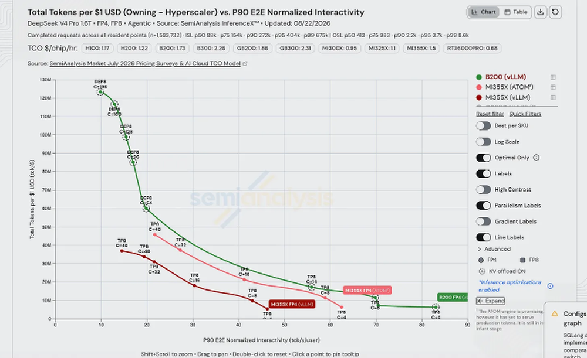
首个优化：DeepSeek-V4 paged sliding-window attention智能用sparse checkpoint retention。merged实现保持选中window tails存活，分支和replay请求可从有用边界恢复。测量干净分离两效果：同一AgentX trace并发48，实际前缀hit rate从5.6%→96.45%，sliding-window gate损失从91.35%→0.16%。第二数是第一数的机制：十分之九前缀匹配被找到又因缺window tail丢弃，cache不是没命中而是被否决。
两个更早cache-manager修复先落地才可测。一个阻止free-pool hits摧毁共享cache entries；另一个restored prefix hashing（默认scheduler模式）把重复长prompt从零缓存token变成复用每完整前缀block。单独变更让prefix-hit prefill留在优化sink attention kernel而非回退generic path。
Hybrid模型也带recurrent/compressor state，与普通KV决定性不同：无法从周围token重建。window tail可从邻近上下文重算，recurrent state是之前一切积累：丢弃就只能重放序列。ATOM给这per-request state内容寻址checkpoint生命周期，生成轮次留可复用resume points而不预留独立受保护cache。一测试中请求复用512个生成token、只算两token后缀。
调优细节与特性同等重要：无条件发checkpoint在zero-hit流量花17.5% 吞吐：每从不回来的session为帮回来的那些付价。按token间隔spacing checkpoints避免惩罚，1k1k吞吐保持测量噪声内：面向agentic复用的特性不应向永不用的负载征税。
ATOM的AgentX-relevant CPU path从为offload辩护的算术开始：Standalone LMCache offload从CPU重载32,000-token前缀约0.32s vs重算约2.5s（八倍余量）。这使这些上下文长度跨bus值得，短prompt不成立。
其余path关乎ownership和index placement而非带宽。ATOM抄vLLM的multi-connector设计：prefill worker可发KV到远端decode worker同时把同前缀存CPU，不释放blocks直到两消费者都完成：两独立读者同blocks是单轮不会遇到的局面。
把恢复blocks提升回GPU prefix index修更隐蔽浪费：否则CPU加载的前缀用了却不注册为resident，下轮跨bus再取同一热前缀：为已在HBM的cache反复付传输。follow-up一起修async save ordering、packed-KV geometry、unaligned handoffs、remote request accounting，消跨两轮2,638-request验证的reload corruption。这bug只在同blocks反复保存、逐出、恢复时浮现。
分布式路径在不同代码库重复同一模式：routing必须知道state住哪。ATOM的router（ATOMesh）是SGLang router的fork、删了大多特性。不幸ATOMesh需要SGLang的cache-aware routing特性，所以加回去。ATOM获KV lifecycle events给cache-aware routers、多节点prefill/decode routing、session-sticky data-parallel routing。Sticky政策是双侧妥协：对话回健康的持其state的worker，但idle分配过期、sticky不因消失session永久失衡cluster。
分离必须移动模型实际保留的一切，不总是一个uniform cache。DeepSeek-V4传输其mixed FP8/BF16 cache layout的两个buffer；EAGLE分离移动draft model的独立KV cache旁目标cache：TRTLLM和SGLang各自解决的同一second-cache问题。Remote-KV admission/backpressure闭环：decode侧不接受多于能安全resume的parked transfers。
ATOM上PCP报告mean TTFT低35-43%，64,000-token输入总吞吐最多 +49%：增益随输入长而非batch增大。实用化需它与其他session依赖组合：DCP兼容prefix caching/chunked prefill/FP8 KV、扩展到MTP。与prefix cache不能共存的并行会把一个长上下文赢换另一个。单GPU内部同样稀缺：batch-1 MLA decode无head/query维可摊、只剩KV walk，硬编码split budget 16让walk只跑gfx950 256 CU中16个。开放变更停止覆盖kernel自身split derivation，Aiter把walk切成机器有的cluster数那么多块。
Chunked pipeline-parallel prefill从内存侧攻击同一问题，用流式layer-stage handoffs替代重复tensor-parallel collectives。GLM-5.2高负载结果本节最完整：输出吞吐翻倍、median TTFT 28.6s→8.7s、每prefill GPU持3.68× KV blocks：最后数最先读，prefill GPU容量决定部署撞HBM cliff前多少长session能在途。
AITER。ATOM/AMD vLLM/AMD SGLang的长上下文执行依赖匹配低层AITER kernels：引擎层并行策略只有kernel能表达才真实。Prefill context-parallel process groups提供prefill context parallelism需要的额外query-sharding维，还加宽131,000+ token prompt的fused-kernel row indexing。Decode context parallelism（DCP）跨已存在的tensor-parallel GPUs shard KV，更长序列或更大batch装下而不复制整cache到每rank。
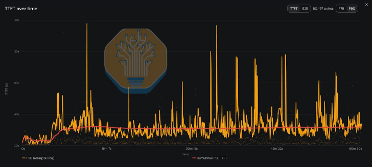
大cache也暴露短固定请求几乎不达的失败类：地址宽度。32-bit offset完全够用直到单cache pool跨界，之后算术wrap、kernel寻址错误行而不抛错。AITER加batch prefill >4GB的runtime 64-bit dispatch、>2GB的64-bit MLA offsets、DeepSeek-V4 unified cache paths全程64-bit addressing（约1.5亿行pool中防静默错误读写）。
DeepSeek-V4 decode也获64/128-head MTP packings的persistent MLA kernel：普通解码和spec验证实际产生的两个head数，给引擎常见形状专用长上下文路径而非当短上下文kernel的偶然变体。与vLLM AITER sparse-MLA selection同论证：长上下文里generic path不是适度妥协，是错误kernel。
Dynamo。相当多NVIDIA提交用Dynamo Inference Orchestration and Router。Dynamo的AgentX系列显示engine kernels改善后分布式serving层可成瓶颈。Router工作量与活跃前缀数量和长度成比例而非生成token数，很多长重叠长寿session的负载以fixed-shape流量从不的方式加载它。第一系列PR降每routing决策成本：lookup hot path少做事、无冗余suffix invalidation、batched KV matching/registration/ownership/terminal dereferences（并发512报median输出吞吐 +22.2%）。
第二系列改ownership表示：底下更难的问题。每缓存block需归属依赖它的请求，用中不释放、全用完不钉住。数千并发session共享重叠前缀时记账本身变显著。Dynamo从shared block chains → arena-level ownership counts → backend-specific request leases，每步粗化跟踪单元。Lease设计把vLLM backend的AgentX replay时间降23.7%、SGLang 22.0%，同时降峰值内存：前表示是问题而非流量。
进一步router profiles移除同形状成本。Bucketed expiry pruning替换扫描所有跟踪物，高churn AgentX吞吐 +13.7%。Delta-only suffix cleanup只处理变化，同窗口吸收约28× store/remove events。Compressed prompt paths前端CPU -35.3%、显著改善尾TTFT：此负载prompt长且大多重复。Overload state增量跟踪而非重算。
一个routing变更是刻意权衡而非纯赢。Dynamo可在routing score中计活跃decode请求，已承诺长decode的worker显得比queue depth单独暗示更贵。报告调优点median AgentX延迟改善、小吞吐成本：请求长期占据worker才可见的选择。开放follow-up打包成新agentic router preset更推同方向：prefix overlap计2、prefill load缩放4、活跃decode请求权重64。8×H200 AgentX运行上该preset固定窗口完成输出吞吐 +8.26%、run-level p95 TTFT -43.1%、p95 inter-token延迟 -22.6%、多完成一条完整轨迹。
请求平面优化：agentic trace不只发一请求一响应，发多相关请求带大体相同prompt、每token流回自己的frame，序列化和拷贝每轮每token付。MessagePack request payloads吞吐 +8.1%、mean TTFT -9.7%；direct Python transcoding移除中间value tree。后续序列全移除一次拷贝而非加速一次：不拷MessagePack event payloads、不拷received ZeroMQ frames、不每token付全inter-token-latency metrics开销。chat streaming hot path缩短。单看平凡；乘每并发session每流token就是前端能维持多少req/s的决定者。
高并发profiling找与移动数据无关的成本。Static logging filters移除共享span-matcher lock（争用点而非量问题），前端吞吐932→1,133 req/s。Simpler positional radix buckets 32-worker运行峰值内存 -5.51 GiB。开放变更每响应flush一次detokenization metrics而非每流chunk更新累计counters，匹配diagnostic profile前端CPU约减半：instrumentation每调用便宜、每token一次就灾难。
LMCache是开源KV cache层，坐推理引擎下，按前缀hash存可复用KV chunks到CPU DRAM、本地NVMe、远端backend（Mooncake、Redis、S3）。
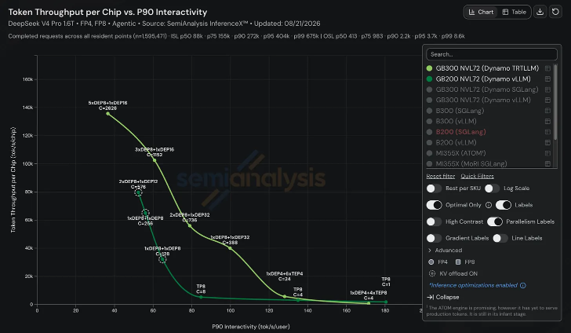
LMCache multiprocess path因agentic cache移动的量和形状而变。每请求上下文超100,000 token时先为整载预留blocks：pool被全在等、无一推进的请求耗尽。Chunked external-cache loading按chunk预留，loads交错排干。并发32完成120请求（旧path 28后死锁），并发48保持运行、KV pool 98.5% 满。
其他变更减少移动量和runtime干扰：只存DeepSeek-V4 hybrid groups有用部分（每token存储近20× 降）；sliding-window prefetch只载活window；每object group一个原生transfer call移除重复Python lock handoffs（开销与片数而非字节成比例）。
两个当前LMCache变更特别AgentX特定但开放。Hybrid lock-accounting fix阻止一请求释放另一请求在共享sliding-window/recurrent-state chunks上的read locks。多请求须共享同chunks、记账须per-chunk而非per-holder、逐出须真开始。持续Kimi-K3运行配DRAM offload供给三者并产生数万警告、损坏生成、最终逐出开始后GPU崩溃。
并行LMCache工作把以上全部带到AMD Instinct。CacheBlend非前缀复用依赖flashinfer（CUDA-only），所以Triton block-sparse attention backend重实现三kernel：block-sparse attention（CSR indices + log-sum-exp输出）、causal prefill、log-sum-exp输出blending。ROCm检测到或flashinfer缺失时自动路由。AMD hipFile backend经ctypes绑ROCm的hipFile扩展GDS L1 slab-file tier（原本只经NVIDIA cuFile达存储）。
分发是剩余缺口：CUDA用户装预建wheel、AMD用户源码构建。与AMD合作发布预建gfx942/gfx950 wheel，装进upstream image、过MI350X全部56个KV-transfer kernel tests、发GitHub release（pip install lmcache保持CUDA构建）。
DCP-aware CPU offload解决长上下文强制并存的两特性间直白不兼容。DCP启用时每rank只持KV的stride，任何单rank能存的不是可用前缀；fix保存前收集strided shards、加载后重分配。否则启用context parallelism静默禁用恰为两特性动机的长前缀CPU cache hits。验证记录30,000+ CPU hit events、单请求加载达数十万token。
Mooncake服务Moonshot的Kimi生产流量和许多实验室生产流量，是分离vLLM/SGLang配置下层的transfer engine。直到最近AMD支持停在RDMA registration和可安装包两处。
NVIDIA上为RDMA注册GPU内存用nvidia-peermem kernel module或导出dmabuf FD。AMD无nvidia-peermem等价物，GPU-direct RDMA无路、部署回退经host DRAM staging KV。HIP dmabuf registration branch加现有CUDA dmabuf path的镜像（经ROCm而非CUDA handle call导出，先解真allocation base：caching allocator在大allocation内offset处打包tensors）。
不可安装的支持不是支持。Mooncake发CUDA和MUSA wheels无ROCm包，AMD用户每镜像源码构建引擎。ROCm wheel/CI/release path发mooncake-transfer-engine-rocm到PyPI。该工作流因dogfooding agentic负载注意ROCm从源码构建MoonCake不是一等公民模式。
Transfer engine无device kernels、不依赖torch，所以一个arch-agnostic wheel覆盖gfx942/gfx950，ROCm runtime加载时绑定（非vendored）：同wheel在upstream vLLM ROCm image和SGLang ROCm image原样工作。验证为完整交叉积：MI300X/MI355X × vllm-openai-rocm/lmsysorg-sglang × master binary + HIP buffer transfer test。一起，这些PR让AMD AgentX运行可从发布产物装transfer engine和KV cache layer到stock upstream images、在GPU memory和fabric间直接移KV。
其他优化。MiniMax-M3测试ROCm工作是否复利成day-zero就绪。AMD首个公开分离recipe（MI355X FP4）1月达InferenceX、落后NVIDIA数月；M3 FP4分离day zero落地：从DeepSeek-R1时代（parity花数月）的改进。三个vLLM fix在那day-zero path上，各是正确性而非性能失败：
分离先被堵。NixlConnector的handshake断言SPLIT-region block_len随prefill-to-decode TP ratio缩放，但block_len跟per-rank KV heads。M3有4 KV heads，TP4 prefill配TP8 decode两侧GQA-capped每rank一头、两长度相等而断言要2倍。Handshake被拒、无KV移动、decode全重生成、gsm8k 0分。Validating against actual head ratio修复。
另两个平台分叉。M3的sparse-attention backend对每E4M3配置把byte-backed FP8 cache读作float8_e4m3fn。但gfx942的platform dtype是e4m3fnuz，两编码不同，K/V在kernel消费前被改。Using platform dtype for cache view修两半。M3也作为分离NVIDIA/AMD模型文件发货，只有NVIDIA实现EAGLE3接口，ROCm上spec decoding引擎init就abort。Bringing AMD model to parity恢复，MI355X gsm8k匹配非EAGLE3 MI355X运行和B200。
AgentX是开源现实世界长上下文多轮agentic轨迹重放的巨大转变，我们收集了价值 $3M的token轨迹（Claude Code、OpenAI Codex等真实流量）。除数据集，我们开发了公平重放流量模式的全面方法论。
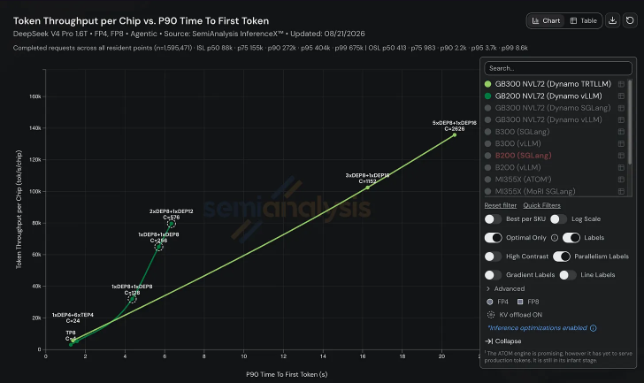
设计AgentX时north star是让基准在KV负载形状和KV复用模式上尽可能现实。最初试重放SWE-bench、Qwen-Bailian、HuggingFace上随机Claude Code traces：当时这些没有显著subagents、1M context、compactions、动态工作流。SemiAnalysis团队大多AI重度用户、用agents做编码/分析研究/Excel建模/社媒运营等，决定内部捕捉最可实现现实轨迹。
创建intercept Claude/Codex HTTP请求的proxy收集大量轨迹，用户改base URL指向proxy上传。撰写时已收集8,000+ sessions、340万请求、6,100亿token，代表超 $3M花费。开源AgentX v1.0基准的代表性子集。
为保护员工隐私，replay数据集无原prompt、源码、工具参数、工具结果。每请求内容tokenize后分64-token blocks、每block换session-scoped chained hash：匹配prompt前缀产生匹配hash前缀而不泄露内容。Replay时hash blocks用编码数据集token替换，保留原工作负载的近似上下文增长和对话KV复用模式。
该过程必然不完美：用前沿模型提供商API时，端LLM server真正看到的内容大多隐藏（SOTA模型thinking内容现加密于HTTP请求、换确定性hash阻蒸馏）。API providers还服务端加额外chat templating、不可观察Anthropic专有tokenizer或服务端工具引入的上下文。用确定性占位符和经验校准的模型特定padding重建prompt长度。
总之：收集Claude Code轨迹到与原服务器重放完全一致的方式不易（信息不全），但有足够上下文以极高保真度匹配原流量模式、时序、前缀缓存、DAG模式。
数据集。AgentX v1.0数据集是8.3k session proxy语料的393 session子集。后处理清异常：移除Claude Code security monitor（auto mode）和title generation请求（Claude Code特定、非通用agentic流量）；移除重建输入长度 >990k的请求；移除重复请求（连接dropped时proxy收到相同请求）。每对话格式化为WEKA trace format（Callan Fox的kv-cache-tester项目提出）。
处理后分布：ISL/OSL和inter-turn延迟（agentic里主要是tool use时间）相对log-normal。Median ISL 142k token、median OSL 444 token、median inter-turn延迟3.84s。约10% inter-turn延迟 >1分钟（可能harness等真人响应的间隙）。
数据集175 sessions含至少一个subagent（约44%），共1,697个subagent rollouts、median每session 4个。Subagent median wall-clock 2.27分钟。数据集含1M上下文（测最新前沿开源权重模型），另有截断256k数据集给max context 256k或更小的模型。
Replayer。与AIPerf（NVIDIA的vendor-agnostic HTTP replayer，tenstorrent/AWS/AMD等采用）合作而非从零建。为更vendor-neutral维护独立fork。
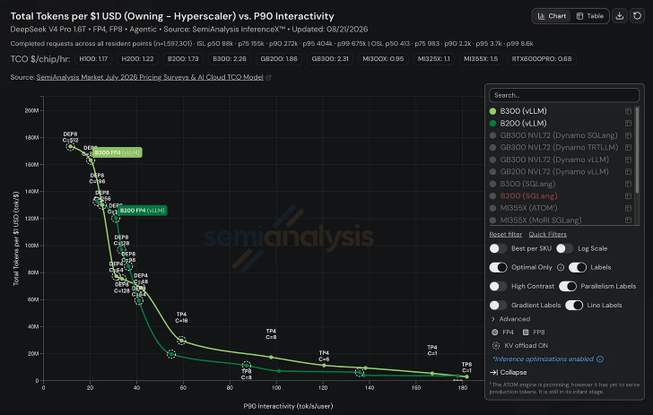
Agentic session天然描述为有向无环图（DAG）：每请求是节点，边表示head请求须等tail完成才能发出。每边带延迟（precondition满足后等多久）。最简单session完全线性（无subagent无并行），图退化成线、边只编码inter-turn延迟（tool use time或think time）。
Agentic traces中也可spawn subagents：独立请求流、自有上下文、通常做聚焦任务。多subagents可并行跑更多聚合工作、部分情况与主agent并行。主agent等subagent组完成、把输出并入主context。这让线性链成DAG。识别subagent组时AIPerf找最近主agent predecessor指定为spawning request；join request是subagent组结束后下一个主agent request。
AIPerf按（spawning request, join request）对key每subagent，所以多流塌缩成分支、分支取首成员名。主agent也可与自家subagents重叠（请求25s发出时003/004还在跑：主agent只被join它的组阻塞、非每个在途subagent）。Auxiliary requests是与其他请求不共享上下文的一次性请求（如Claude Code的summarize this session、/btw）：从主agent分支、永不join回。
Pareto前沿扫描。AgentX里对单部署扫并发Claude Code session数生成Pareto frontier。因每对话有现实inter-turn延迟和subagent使用，得到更尖峰、更现实流量模式。
评估agentic负载时重要指标：交互性（TPS）和TTFT仍重要、是行业SLO标准。看AgentX结果时*极重要*地同时看TPS和TTFT：存在优化提升一个牺牲另一个。正开发组合TPS/TTFT的新指标，也考虑agentic里人们更关心*任务*完成的端到端速度。End-to-end延迟现形式意义减小（与OSL直接成比例，p90 E2E被最长输出序列长度的10% 尾重影响）。
Warmup、时序、确定性、对话复用。AgentX目标是基准已稳态的系统。Agentic负载意味着profiling应从一些上下文轨迹已缓存的点开始；也期望不是所有对话从turn 0开始（防thundering herd）。
Warmup两阶段：AIPerf用固定随机seed选每对话25%-75% 墙钟点、识别每流最晚请求（含主agent和活跃subagents）作primer requests一起发出重建对话状态；第二阶段每replay lane再推进10请求给KV cache更多物化机会。所有warmup请求无inter-turn delay、最大输出长度1 token。
Warmup完成开始profiling一小时，所有指标严格在此期间收集。每stream 5分钟idle cap（长inter-turn gap不占worker lane）：也是Anthropic默认KV cache TTL。确定性保证同引擎/硬件/并发/server设置的运行可复现。
会话完成时replay lane从dataset sampler选另一对话。每replay收唯一确定性cache-bust marker前置到每独立前缀链（主agent链和新鲜context subagent/one-off链），forked subagents继承父marker。Marker同replay内不变（保留KV复用模式）、replay间变（防人为高cache hit rate）。也启用并发大于数据集会话数（393）的场景。
公平Spec Decoding方法论。数据集收集时匿名化，64-token hash blocks须重放前合成填充。AIPerf从合成编码/tool-use token pool确定性采样。KV复用模式和请求时序保留，但合成请求数据有额外考量：合成数据上跑spec decoding可能让speculator接受/拒绝异常数量token（speculator没在合成数据训练）。
自InferenceX v2改进：与社区合作确保多数OSS推理引擎有强制从speculator接受多少draft token的机制。对每 (model, speculator, draft length, thinking mode) 组合在SPEED-Bench agentic coding数据集收集平均AL。Runtime对AgentX应用这些现实spec decoding acceptance lengths保vendor-neutral公平。
AgentX需要的不止新基准harness和数据集，还重建部分InferenceX可视化让agentic结果易探索。单AgentX datapoint代表数千请求跨增长对话、subagents、warmup期、cache states、动态变化在途负载，Pareto曲线上单点藏很多信息。
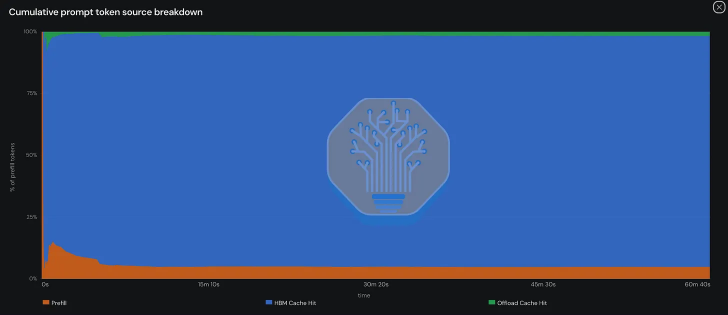
主要变更之一是构造曲线方式。之前InferenceX中spec decoding启用/禁用常显示为分离曲线；现前端组合允许的推理优化、为每model/SKU/engine组合显示最佳可用曲线：单曲线上的个体点可能用不同优化技术和配置（spec decoding、分离、KV cache offload）。目标显示每硬件/软件栈的最佳生产性能而非每优化组合单独曲线。仍暴露每点底层配置和provenance（tooltip显示产生它的精确配置 + run metadata + CI provenance + AgentX统计）。
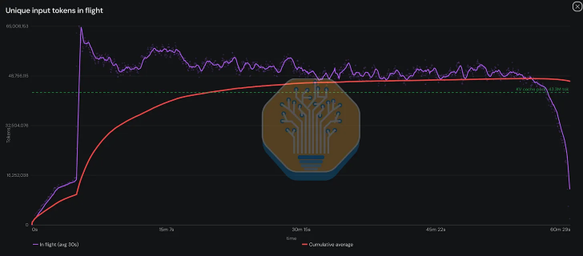
详细点视图含：输入输出序列长度分布、interactivity/TTFT随时间、KV cache利用、请求队列深度、前缀cache hit rate、输入/decode吞吐、prompt-token source分解、唯一输入token随时间。分离warmup和profiling数据。KV offload点被额外虚线圈围绕；选中时detail页显示offload type、KV offload engine、chip cache-hit rate、CPU cache-hit rate。
新请求timeline按conversation或worker组织；conversation视图把subagents组在根对话下，易见对话和subagents何时重叠。每请求可点、直连InferenceX datasets页对应对话和轮次。AgentX页含flamegraph可视化单对话结构：每bar一轮、相对最大轮缩放、分缓存前缀token/未缓存输入token/生成输出token。
未来。继续小修v1.0.x harness、计划v1.1更大变更。每不同模型提交总跑同minor version保结果可比。快速跟进加SSD/NVMe KV offloading（更大KV cache工作集、支撑Pareto曲线高吞吐左侧）。
捕获更大、更多样、更新的agentic traces（更宽模型和harness）。下版数据集保留system instructions、user/assistant messages、tool calls、tool results的边界：让AgentX评估用harness可得但推理引擎通常隐藏信息的workload-aware serving技术。例如router可把低复用tool流量导向专用prefill workers、长tool call期间保留agent前缀、subagents fork时prefetch/share prefixes。
SGLang RFC提供具体例：router-initiated hint interface用session lifecycles、shared-prefix boundaries、tool-call duration、subagent state告诉引擎KV何时共享/prefetch/demote/pin/retain。
还捕获细/粗粒度power telemetry数据，更准评估Joules per intelligence。
参考：https://newsletter.semianalysis.com/p/agentx-inferencexv3-does-cuda-moat